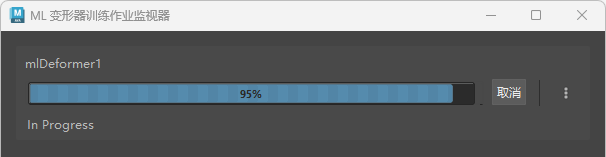

“ML 变形器训练作业监视器”(ML Deformer Training Job Monitor)用于查看训练进度。也可以从“ML 变形器作业监视器”(ML Deformer Job Monitor)取消训练过程。
提示： 您可以使用不同的参数进行训练，根据不同的设置、偏移模式等创建不同的模型变体。然后，使用相同的训练数据在它们之间切换，以查看哪个变体最符合您的需求。
要打开“ML 变形器作业监视器”(ML Deformer Job Monitor)，请在 ML 模型进行训练后
- 单击 ML 变形器属性列表中的“打开训练作业监视器...”(Open Training Job Monitor...)图标
 。
。
- 在 ML 变形器属性(ML Deformer Attributes)列表中的“ML 模型”(ML Model)单元上单击鼠标右键，然后选择“打开训练作业监视器...”(Open Training Job Monitor...)
本主题介绍“ML 变形器训练作业监视器”(ML Deformer Training Job Monitor)中的设置。有关如何使用 ML 变形器的信息，请参见创建 ML 变形器和使用单独的目标几何体创建 ML 变形器。

ML 变形器作业监视器
单击进度条旁边的 菜单可显示以下选项：
- 将信息打印到脚本编辑器(Print Info to Script Editor)
- 将有关训练进度的信息发送到脚本编辑器(Script Editor)以进行调试。
- 选择 ML 变形器节点(Select ML Deformer Node)
- 在节点编辑器(Node Editor)中高亮显示“ML 变形器”(ML Deformer)节点。
- 删除作业(Delete Job)
- 从“ML 变形器训练作业监视器”(ML Deformer Training Job Monitor)中清除会话。